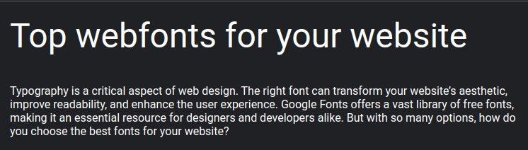
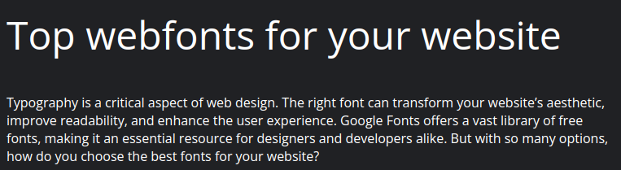
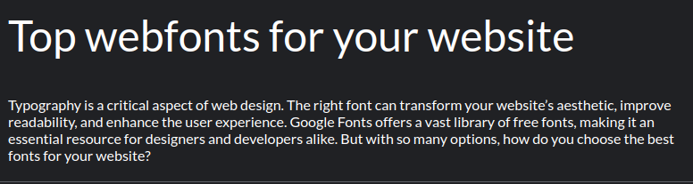
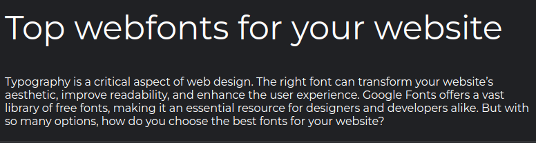
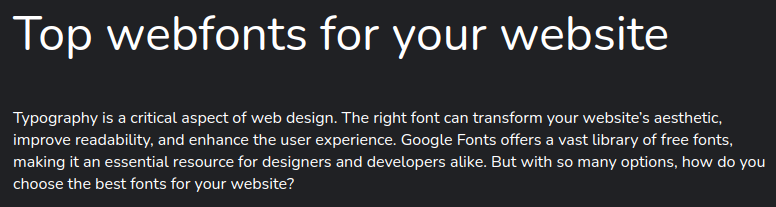
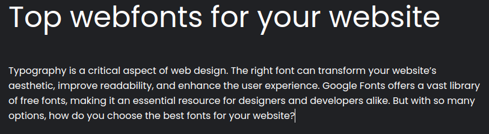
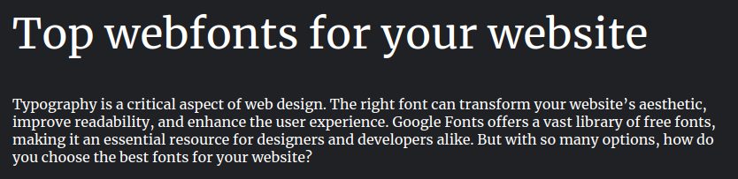
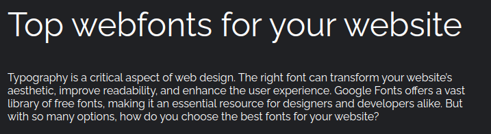
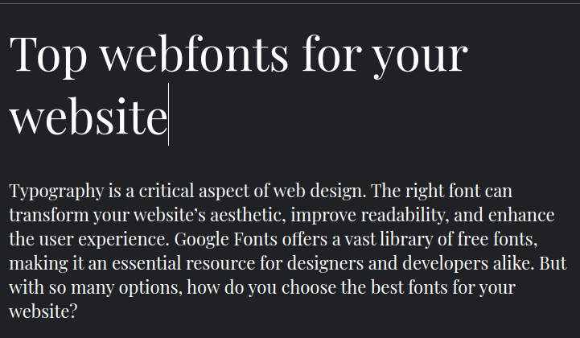
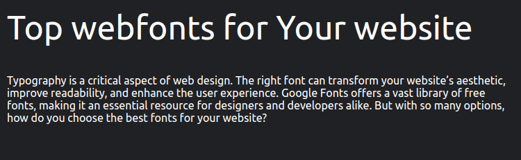

Typography is a critical aspect of web design. The right font can transform your website’s aesthetic, improve readability, and enhance the user experience. Google Fonts offers a vast library of free fonts, making it an essential resource for designers and developers alike. But with so many options, how do you choose the best fonts for your website?
In this blog, we’ll showcase 10 of the best Google Fonts for modern websites. You’ll also find previews for each font, so you can visualize how they might look in your projects.
Roboto is a versatile sans-serif font that has become a staple in web design. Known for its clean lines and readability, it’s perfect for both headlines and body text.
Best For: Blogs, e-commerce, and corporate websites.
Open Sans is another popular choice, designed for legibility across various screen sizes. Its friendly appearance makes it ideal for user-centric websites.
Best For: Portfolio sites, tech startups, and educational platforms.
Lato offers a balance of professional and casual, with subtle round edges that add personality without compromising clarity.
Best For: Blogs, creative agencies, and SaaS websites.
Inspired by urban typography from the early 20th century, Montserrat is bold and modern. Its geometric structure makes it stand out.
Best For: Landing pages, personal blogs, and fashion websites.
Nunito combines a rounded aesthetic with excellent readability, making it a great choice for user-friendly interfaces.
Best For: Mobile apps, non-profit websites, and community platforms.
Poppins is a geometric sans-serif font with a modern flair. Its uniform strokes create a visually pleasing experience.
Best For: Tech startups, SaaS products, and creative portfolios.
For those who need a serif font, Merriweather is a top pick. It’s designed for readability on screens and works well for long-form content.
Best For: News websites, blogs, and online publications.
Raleway is an elegant sans-serif font with a minimalist touch. Its thin weights are great for sophisticated designs.
Best For: Fashion websites, design agencies, and lifestyle blogs.
This serif font is ideal for creating a classic and luxurious vibe. Playfair Display is often paired with sans-serif fonts for modern designs.
Best For: Luxury brands, wedding websites, and editorial designs.
Ubuntu is a unique font designed specifically for the Ubuntu operating system. Its modern and approachable style makes it suitable for tech-centric websites.
Best For: Tech blogs, developer tools, and open-source projects.
When selecting a font, consider your brand’s personality and the user experience you want to deliver. Experiment with combinations of fonts for headings and body text to create a unique and cohesive design.
To make this process easier, try our Font Tester Tool . Preview Google Fonts and custom fonts in real-time, compare styles, and find the perfect match for your project.
Google Fonts provides a wealth of options for modern web design, but the key is choosing fonts that align with your website’s purpose and audience. Start exploring these top 10 fonts today, and let your typography speak volumes.